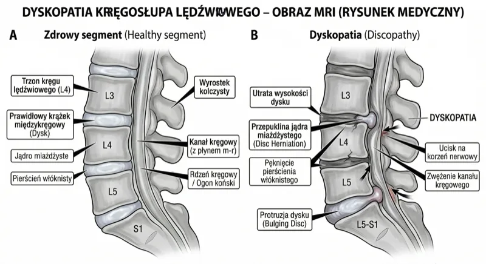

Dostałeś diagnozę: dyskopatia, przepuklina dysku, rwa kulszowa. I od tej chwili czujesz się, jakbyś dostał zakaz ruchu dożywotnio. Lekarz powiedział "ostrożnie", fizjoterapeuta powiedział "uważaj", a Ty siedzisz w domu i boisz się podnieść szklankę wody. Tymczasem nauka mówi coś zupełnie innego — i to coś, co zmienia wszystko.
Szybka odpowiedź
Dyskopatia po 50-tce nie oznacza automatycznie zakazu ćwiczeń; u większości osób bez objawów neurologicznych pomaga ruch i stopniowe obciążanie. Jeśli ból promieniuje do nogi dłużej niż 2-3 tygodnie lub narasta osłabienie, potrzebna jest konsultacja lekarska. Zacznij od 2-3 krótkich sesji mobilizacji i wzmacniania tygodniowo.
Kluczowe wnioski
Kluczowe wnioski
- Najważniejsze: Dostałeś diagnozę: dyskopatia, przepuklina dysku, rwa kulszowa.
- W artykule znajdziesz konkrety o: Najpierw wyjaśnijmy co tak naprawdę się dzieje w kręgosłupie.
- Drugi kluczowy temat: Co nauka mówi o ćwiczeniach przy dyskopatii — wyniki są jednoznaczne.
Najpierw wyjaśnijmy co tak naprawdę się dzieje w kręgosłupie?
Najpierw wyjaśnijmy co tak naprawdę się dzieje w kręgosłupie. Ta sekcja porządkuje temat "Najpierw wyjaśnijmy co tak naprawdę się dzieje w kręgosłupie?" w prosty sposób: najpierw najważniejsze zasady, potem bezpieczne wdrożenie i na końcu sygnały, które warto monitorować. Taki układ pomaga działać spokojnie, utrzymać regularność i szybciej odróżnić dobre wskazówki od przypadkowych porad z internetu.
Dysk kręgosłupa
Wyobraź sobie, że między każdymi dwoma kręgami kręgosłupa siedzi żelka — miękka w środku, twarda z zewnątrz. Ta żelka amortyzuje każdy Twój ruch: chodzenie, siedzenie, dźwiganie. W normalnych warunkach jest jak idealnie wyprofilowana poduszka.
Dyskopatia to stan, gdy ta żelka zaczyna się spłaszczać, dehydratować i tracić elastyczność. Przepuklina dysku to moment, gdy miękka część środka wypycha się przez twardą otoczkę na zewnątrz — jak dżem wyciśnięty z pączka. Jeśli ten "wycisk" dotknie pobliskiego nerwu — pojawia się ból, mrowienie lub drętwienie biegnące wzdłuż nerwu.
Rwa kulszowa (ischias) to właśnie taki ból — gdy przepuklina uciska nerw kulszowy, który biegnie od kręgosłupa przez pośladek do stopy. Ból może być piekący, strzelający lub jak elektryczne uderzenie wzdłuż nogi.
Przepuklina dysku = dysk wypycha się poza swoje miejsce.
Rwa kulszowa = ból wynikający z ucisku na nerw kulszowy.
Każdy z tych stanów wymaga trochę innego podejścia — ale żaden nie oznacza zakazu ćwiczeń.

Czy zmiany w kręgosłupie na rezonansie to wyrok?
Jeden z najważniejszych faktów medycznych, o którym rzadko mówi się pacjentom: zmiany widoczne na MRI nie muszą oznaczać bólu. I odwrotnie — ból nie zawsze ma pokrycie w obrazie.
Źródło:Brinjikji, W. et al. (2015). Systematic Literature Review of Imaging Features of Spinal Degeneration in Asymptomatic Populations. American Journal of Neuroradiology, 36(4), 811-816.
Co to znaczy w praktyce? Że rezonans magnetyczny pokazuje Ci strukturę — nie wyrocznia bólu. Zmiany w kręgosłupie są normalną częścią starzenia się, tak jak zmarszczki na twarzy. I tak jak zmarszczki — nie wymagają operacji.
Co nauka mówi o ćwiczeniach przy dyskopatii — wyniki są jednoznaczne?
Przez dekady obowiązywała jedna główna rekomendacja dla bólu kręgosłupa: odpoczynek i bezruch. Leżeć, nie ruszać się, poczekać aż przejdzie. Dziś to podejście jest w dużej mierze uznawane za przestarzałe, a coraz większy nacisk kładzie się na odpowiednio dobrany ruch.
Źródło:Thavarajasingam, S.G. et al. (2025). Exercise, manipulation and traction physiotherapy in the conservative management of lumbar disc herniation: a systematic review and meta-analysis. Brain and Spine.
Czytasz to dobrze. Ćwiczenia — nie operacja, nie leki, nie bezruch — dają dużą, mierzalną poprawę. I co ważne: bezpieczną.
Źródło:Du, S. et al. (2025). Clinical efficacy of exercise therapy for lumbar disc herniation: a systematic review and meta-analysis of randomized controlled trials. Frontiers in Medicine.

Dlaczego ruch pomaga? Wyjaśnijmy to prosto. Dysk kręgosłupa nie ma własnego ukrwienia — odżywia się przez ruch. Kiedy poruszasz kręgosłupem, "pompujesz" do dysku wodę i składniki odżywcze. Bezruch go głodzi. Ruch go karmi.
Słabe mięśnie głębokie kręgosłupa sprawiają, że każde przeciążenie trafia wprost w dysk zamiast być amortyzowane przez mięśnie. Wzmocnienie tych mięśni to naturalna stabilizacja kręgosłupa.
A co z rwą kulszową? Czy ból promieniujący do nogi to zakaz ruchu?
Rwa kulszowa to jeden z najbardziej bolesnych i najbardziej przerażających objawów problemów z kręgosłupem. Ból biegnący przez pośladek do łydki i stopy, często piekący lub strzelający, bywa tak intensywny, że trudno chodzić. I właśnie dlatego większość osób natychmiast rezygnuje z jakiejkolwiek aktywności.
Nauka mówi: ruch jest leczeniem.
Źródło:Thavarajasingam, S.G. et al. (2025). Brain and Spine; przegląd omawia leczenie zachowawcze, w tym leki, fizjoterapię i iniekcje zewnątrzoponowe jako elementy postępowania pierwszego rzutu.
Ważna informacja: rwa kulszowa w 80–90% przypadków ustępuje samoistnie w ciągu 6–12 tygodni przy odpowiednim leczeniu zachowawczym. Operacja kręgosłupa jest potrzebna znacznie rzadziej niż sugeruje to szpitalna lista oczekujących.
Źródło:Peul, W.C. et al. (2007). Surgery versus prolonged conservative treatment for sciatica. New England Journal of Medicine.
Obalamy mity — jeden po drugim?
Obalamy mity — jeden po drugim. Ta sekcja porządkuje temat "Obalamy mity — jeden po drugim?" w prosty sposób: najpierw najważniejsze zasady, potem bezpieczne wdrożenie i na końcu sygnały, które warto monitorować. Taki układ pomaga działać spokojnie, utrzymać regularność i szybciej odróżnić dobre wskazówki od przypadkowych porad z internetu.
| MIT | FAKT |
|---|---|
| Przy dyskopatii trzeba leżeć i się nie ruszać. | Bezruch jest jednym z najgorszych możliwych podejść. Prowadzi do osłabienia mięśni, pogorszenia odżywienia dysku i chronicznego bólu. Ruch — odpowiednio dobrany — jest leczeniem. |
| Ćwiczenia przy przepuklinie dysku mogą ją "wcisnąć" głębiej. | Dysk nie zachowuje się jak pasta do zębów. Odpowiednie ćwiczenia (np. metoda McKenziego) mogą wręcz redukować uwypuklenie. Właściwy ruch zmniejsza ucisk, nie zwiększa. |
| Skoro mam zmiany na MRI, to z ćwiczeniami koniec. | Ponad 80% osób po 60-tce ma zmiany na MRI i nie czuje żadnego bólu. Obraz To nie zawsze ból. Wiele osób ze "strasznym" rezonansem ćwiczy bez ograniczeń. |
| Operacja to najlepsze rozwiązanie przy silnym bólu. | Operacja daje szybszy efekt w pierwszych tygodniach. Po roku wyniki są porównywalne z dobrze prowadzoną fizjoterapią. Sama chirurgia nie jest wolna od ryzyka: przeglądy opisują m.in. powikłania okołooperacyjne oraz późniejsze nawroty i reoperacje, dlatego zwykle nie jest leczeniem pierwszego wyboru bez czerwonych flag. |
| Siłownia jest wykluczona przy bólu kręgosłupa. | Trening siłowy — odpowiednio dobrany przez fizjoterapeutę — jest jedną z najskuteczniejszych metod leczenia pleców. Silne mięśnie głębokie to naturalna orteza. |
| Ból podczas ćwiczenia znaczy, że coś jest nie tak. | Pewien dyskomfort w rehabilitacji jest normalny. Granica to ból nasilający się w trakcie ćwiczenia lub ból neurologiczny (drętwienie/osłabienie nóg). To są sygnały stop. |

Co możesz robić — i czego unikać?
Co możesz robić — i czego unikać To właśnie w tym miejscu najłatwiej zobaczyć różnicę między modą a radami, które mają sens. W tym fragmencie dostajesz konkret: co zrobić krok po kroku, jak ocenić reakcję organizmu i jak uniknąć typowych pomyłek na starcie. Dzięki temu temat "Co możesz robić — i czego unikać?" przekłada się na praktyczne decyzje, które można wdrożyć od razu, bez zbędnej teorii i bez przeciążania planu.
Ćwiczenia i aktywności zalecane
- Chodzenie — podstawa. Nawet 20–30 minut dziennie marszu jest rekomendowane jako pierwsza aktywność przy bólu kręgosłupa. Rytmiczny ruch odżywia dyski i wzmacnia mięśnie stabilizujące.
- Pływanie i aqua fitness — woda odciąża kręgosłup i pozwala na pełny zakres ruchu bez bólu. Idealne na start.
- Rower poziomy lub stacjonarny — nie uciska kręgosłupa, angażuje mięśnie głębokie przy minimalnym ryzyku.
- Ćwiczenia metody McKenziego — specyficzne ruchy zaproponowane przez fizjoterapeutę, które dla wielu centralizują ból i zmniejszają przepuklinę dysku.
- Trening stabilizacji lędźwiowej — ćwiczenia typu "bird-dog", angażujące mięsień poprzeczny brzucha. To Twoja darmowa naturalna orteza.
- Joga i stretching — badania kliniczne potwierdzają skuteczność rozciągania przy bólu neurologicznym, ale przy bólu stawu trzymaj się progu z poradnika mobilność vs rozciąganie po 50.
Źródło:Yildirim, P. and Gultekin, A. (2022). The Effect of a Stretch and Strength-Based Yoga Exercise Program on Patients with Neuropathic Pain due to Lumbar Disc Herniation. Spine, 47(10), 711-719.

Czego unikać — przynajmniej na początku
- Dźwiganie ciężarów z zaokrąglonymi plecami — to jeden z najsilniejszych czynników ryzyka dla dysku. Plecy proste, praca powinna pochodzić z nóg.
- Głębokie skłony tułowia do przodu pod obciążeniem — silnie uciskają tylną część dysku, mogą pogorszyć objawy rwy.
- Wysokoudarowe ćwiczenia cardio (skakanie, mocne bieganie) — szczególnie w fazie zapalnej ostrego bólu. Wrócisz do nich, gdy ból zniknie i zbudujesz siłę pleców. Przeczytaj więcej o tym, dlaczego warto wzmacniać nogi: Bieganie (nie) niszczy kolan.
- Długotrwałe siedzenie bez przerw — statyczne siedzenie wywołuje bardzo wysokie ciśnienie w krążku międzykręgowym. Wstawaj regularnie.
- Ćwiczenia wywołujące ból promieniujący — jeśli ćwiczenie zaostrza objawy rwatyczne (ból schodzi niżej pośladka), przerwij je i omiń.
Kiedy naprawdę potrzebna jest konsultacja lekarska — sygnały alarmowe?
Są objawy, które wymagają pilnej konsultacji ortopedycznej lub neurologicznej. Nie po to by Cię przestraszyć — ale po to by odróżnić stan wymagający leczenia od zwykłego przeforsowania: Po 50-tce warto wdrażać te zasady spokojnie i regularnie, obserwując reakcję organizmu oraz łącząc je z codziennym ruchem i regeneracją.
- Osłabienie siły mięśni nogi lub stopy — np. upadająca stopa lub trudności ze staniem na palcach/pięcie (oznaka utraty funkcji nerwu ruchowego).
- Zaburzenia zwieraczy — problemy z kontrolą oddawania moczu i stolca. Pilna konsultacja operacyjna.
- Nasilający się ból nocny — ból, który wybudza ze snu lub ból po świeżym urazie/upadku na kręgosłup.
- Postępujące drętwienie i utrata czucia obejmujące coraz głębszy rejon (np. całą przednią partię uda czy łydki).

Jak zacząć — plan działania?
Nie potrzebujesz od razu fizjoterapeuty do rezerwacji sali, żeby zacząć się ruszać. Potrzebujesz go zwykle do dokładnej diagnostyki i po to żeby uniknąć głupich błędów. Zanim do niego trafisz: Po 50-tce warto wdrażać te zasady spokojnie i regularnie, obserwując reakcję organizmu oraz łącząc je z codziennym ruchem i regeneracją.
Codziennie 20–30 minut marszu w spokojnym tempie. Jeśli ból nie narasta podczas spaceru, to bardzo dobry znak. Unikaj przewlekłego siedzenia nad laptopem czy przed telewizorem. Chodzenie relaksuje nerwy lędźwiowe.
Wysyłasz kręgosłup do warsztatu, by wzmocnić ramę. Deska na kolanach, miednica neutralna (pelvic tilt w leżeniu), delikatny bird-dog. Powoli budujesz gorset, który zdejmie z dysków stałe obciążenie.
Twoje własne pasje na nowo. Rower pod optymalnym kątem, pływanie, czy wyjścia na lekki trening siłowy (np. maszyny z pełnym wsparciem pleców zamiast martwych ciągów). Jak wracasz na salę, zerknij też na nasz mały poradnik jak stawiać pierwsze kroki w strefie ciężarów.
Dyskopatia, przepuklina dysku, rwa kulszowa — to diagnozy z rezonansu czy usg, a nie wyroki. To powiadomienia od Twojego organizmu, żebyś znów przejął stery i zajął się konserwacją własnego cielska. W wielu takich przypadkach można i warto wracać do ruchu — stopniowo i pod okiem mądrego człowieka. Nie zamiast terapii medycznej, ale jako jej bardzo ważny element.
Twój kręgosłup po 50-tce jest wciąż zaprojektowany do bycia poddawanym obciążeniom nośnym. Daj mu to, czego potrzebuje, by utrzymać ten dach na właściwym poziomie.
Jeśli wracasz do aktywności etapami, zacznij od planu z tekstu jak zacząć na siłowni po 50-tce, dobierz bezpieczniejsze wzorce ruchu przez trening maszynowy po 50-tce, ogranicz codzienne przeciążenia opisane w materiale siedzenie po 50-tce i pilnuj regeneracji według zasad z artykułu nawodnienie na treningu po 50-tce.
Źródła
Źródła
- [1] Brinjikji, W. et al. (2015). Systematic Literature Review of Imaging Features of Spinal Degeneration in Asymptomatic Populations. American Journal of Neuroradiology, 36(4), 811-816.
- [2] Du, S. et al. (2025). Clinical efficacy of exercise therapy for lumbar disc herniation: a systematic review and meta-analysis of randomized controlled trials. Frontiers in Medicine.
- [3] Thavarajasingam, S.G. et al. (2025). Exercise, manipulation and traction physiotherapy in the conservative management of lumbar disc herniation: a systematic review and meta-analysis. Brain and Spine.
- [4] Peul, W.C. et al. (2007). Surgery versus prolonged conservative treatment for sciatica. New England Journal of Medicine, 356(22), 2245-2256.
- [5] Yildirim, P. and Gultekin, A. (2022). The Effect of a Stretch and Strength-Based Yoga Exercise Program on Patients with Neuropathic Pain due to Lumbar Disc Herniation. Spine, 47(10), 711-719.
- [6] Oertel, J.M. et al. (2024). The role of conservative treatment in lumbar disc herniations: WFNS spine committee recommendations. World Neurosurgery: X.
- [7] Shriver, M.F. et al. (2015). Lumbar microdiscectomy complication rates: a systematic review and meta-analysis. Neurosurgical Focus, 39(4), E6.
- [8] American Academy of Orthopaedic Surgeons. Herniated Disk in the Lower Back.
Najczęściej zadawane pytania?
Czy z dyskopatią po 50 można ćwiczyć?
W wielu przypadkach tak, ale plan trzeba dopasować do objawów i etapu leczenia. Najgorszy zwykle jest całkowity brak ruchu przez długi czas.
Jakie ćwiczenia przy dyskopatii lędźwiowej są najbezpieczniejsze?
Najczęściej dobrze sprawdza się spokojna stabilizacja, wzmacnianie pośladków i nauka wzorca ruchu bez bólu. Dobór ćwiczeń powinien uwzględniać indywidualne reakcje.
Kiedy ból kręgosłupa wymaga pilnej konsultacji?
Pilnie reagujemy przy osłabieniu siły, drętwieniu narastającym, zaburzeniach zwieraczy lub silnym bólu po urazie. To sygnały alarmowe wymagające szybkiej diagnostyki.
Jak wdrożyć to po 50-tce krok po kroku?
Zacznij spokojnie: wybierz jeden mały krok na ten tydzień, obserwuj reakcję organizmu i dopiero potem dokładaj kolejne elementy. Najlepsze efekty daje regularność, a nie tempo.